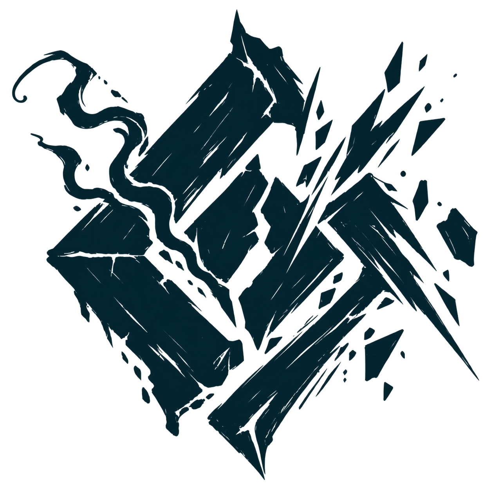
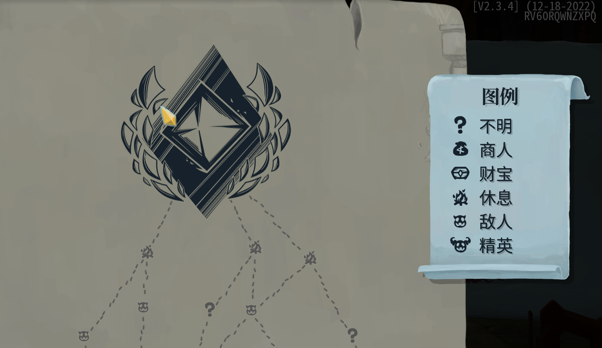
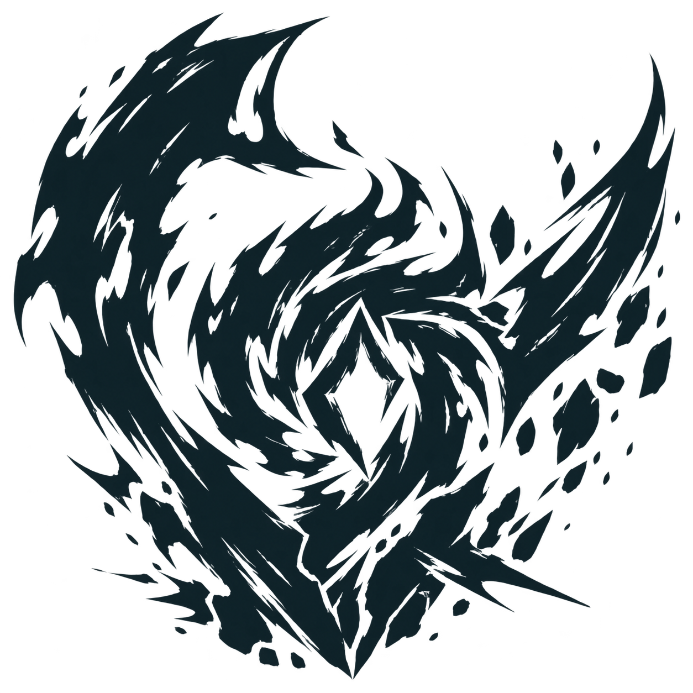
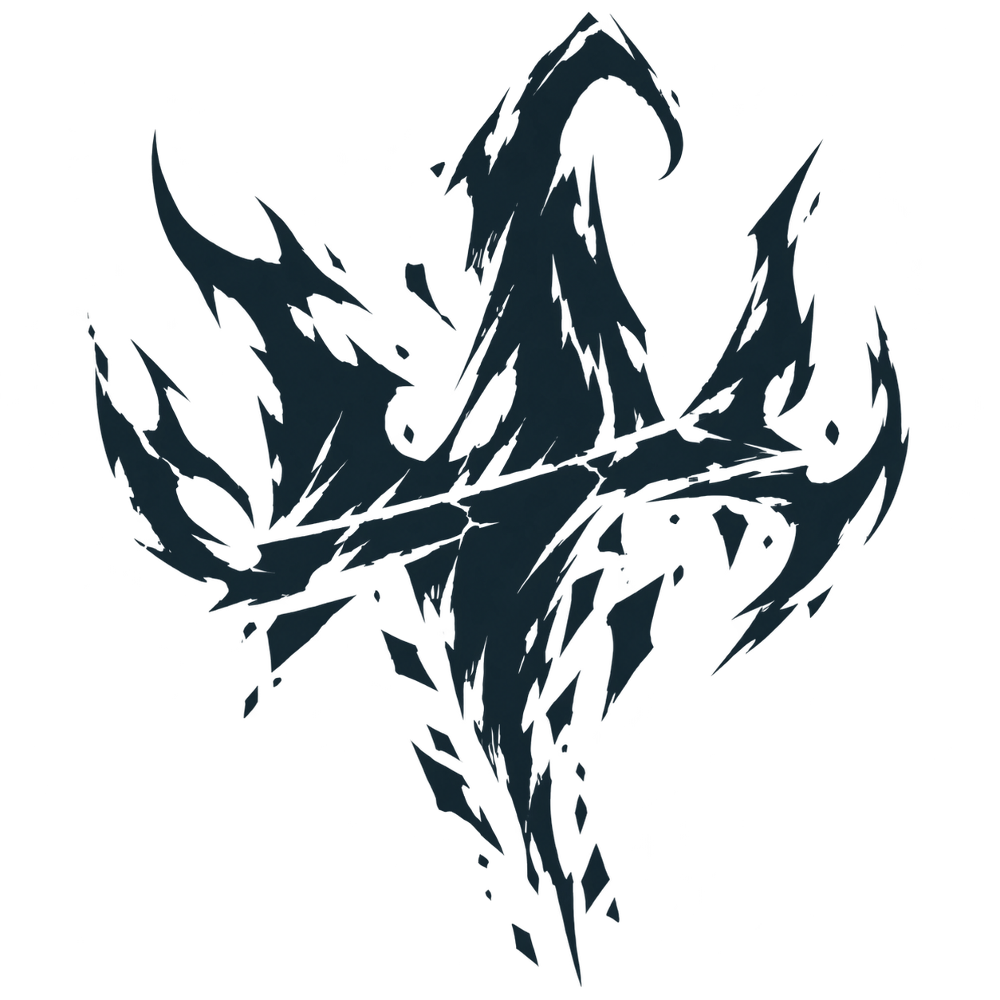

01 封窑兽·匣母
第 1 幕 · 裂匣凶印 · 已通过 · 已实装

180 px
240 px · 游戏尺寸
查看用户提供的样式参考

EMBER’S KILN / BOSS MAP ICONS
新版：更大的主体、不对称的破碎轮廓、粗犷手绘线条，强调破坏性和邪恶气质。三张均为真实透明底 PNG。下方对比 180 px 与 240 px 的地图显示效果。
第 1 幕 · 裂匣凶印 · 已通过 · 已实装


第 2 幕 · 失控炉核 · 已通过 · 已实装

第 3 幕 · 暴君焰冠 · 已通过 · 已实装
